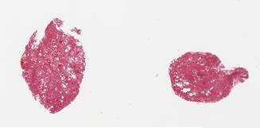
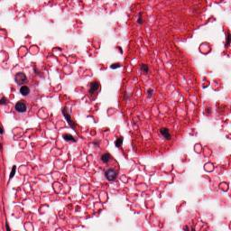

What a tissue biopsy can tell you about how fast you're aging: a tissue-specific age predictor built from real, pre-extracted pathology foundation model embeddings from 4,791 real donor tissue slides.
Ryan Khalloqi1 · Jun Ma2 1Department of Electrical and Computer Engineering, Carnegie Mellon University · 2Princess Margaret Cancer Centre & AI Hub, University Health Network
Real predicted age gap vs. chronological age, Lung, held-out test set (n=169)
4,791
real slides used
971
unique donors
6
tissue types
861 MP
per whole slide
01Background
Why tissue-level aging matters
Aging doesn't happen evenly. Your liver, your skin, and your lungs can each be biologically "older" or "younger" than your birth certificate says, and those differences matter clinically, because organs aging faster are organs at higher risk.
Different tissues age at different rates because they face different kinds of wear. Skin absorbs decades of UV exposure directly. Lungs filter every inhaled particle and pathogen a person ever breathes. The colon lining replaces itself every few days, giving cellular errors many more chances to accumulate over a lifetime than a barely-dividing tissue like the brain. Same person, same birthday, but each organ is running its own, separate clock, shaped by its own history of damage and repair.
Each tissue's real predicted age gap diverges from chronological age by a different amount and in a different direction, skin and lung read younger, brain reads older, colon reads about the same: the core observation a tissue clock is built to measure.
Most of what we know about measuring this comes from blood: methylation clocks, protein panels, blood-based organ-age scores. A paper published in Nature Medicine (Abila, Buljan, Zheng et al., Aug 14 2026) asked a different question: can you read biological age directly off the tissue itself, from an ordinary pathology slide?
25,712
whole-slide images analyzed
40
tissue types
983
individuals
4.9 yr
mean prediction error
They analyzed those 25,712 whole-slide histopathology images across 40 tissue types from 983 people in GTEx, a large public archive of donated tissue samples, and built "tissue clocks": deep-learning predictors of biological age from tissue architecture alone, with no molecular assay involved. Their clocks correlated with telomere attrition, subclinical pathology, and comorbidities, and predicted disease-relevant organ aging across eight conditions including Alzheimer's disease, stroke, and Crohn's disease.
This minicourse builds a small version of that idea ourselves, end to end, on real data, with real (if humbler) results, and shows you exactly where the real engineering effort in a project like this actually goes: from a raw gigapixel image, through a foundation model, to a number you can sanity-check against clinical metadata the model never saw.
Check your understanding
Why might a tissue clock trained on a lung biopsy pick up different aging information than a blood-based epigenetic clock from the same person?
Blood circulates systemically and reflects whole-body signals; a tissue biopsy captures local, organ-specific structural changes (fibrosis, cellular density, vascular changes) that a blood draw may never register, even from the same donor at the same timepoint.
02Vocabulary
What is a biological aging clock?
Before going further, it's worth defining the term this whole course revolves around.
A biological aging clock is a computational model that takes some measurable signal from a person (a blood test, a DNA methylation profile, an image) and outputs a predicted age. Compare that prediction against the person's actual, chronological age, and the difference is the number every aging-clock paper is really chasing:
Age gap
age gap = predicted age − chronological age
A positive age gap means the model thinks that person (or that specific tissue) looks older than their birthday says; a negative gap means it looks younger. The entire premise of the field is that this gap isn't noise: it correlates with real outcomes like mortality, disease risk, and organ function.
Most aging clocks are built from molecular data. DNA methylation patterns ("epigenetic clocks," like the well-known Horvath clock) and blood protein levels ("proteomic clocks") are the two most established families. Both work from a blood or saliva sample run through a lab assay. A tissue clock, the kind this course builds, is a newer, third approach: instead of a molecular signal, it reads the physical structure of tissue itself, captured in a pathology image, and predicts age from what that tissue looks like under a microscope. Section 09 puts this in context against the wider clock landscape.
Three families of aging clock, distinguished by what signal they read: methylation marks, circulating proteins, or (the approach this course builds) the physical structure of tissue itself.Check your understanding
A tissue clock predicts age 62 for a sample from a 55-year-old donor. What's the age gap, and what would it suggest?
+7 years: that specific tissue appears to be aging faster than the donor's chronological age would suggest.
03The imaging modality
What is a whole-slide image?
Before any model, it's worth actually looking at what we're working with. We pulled one real, de-identified slide from the GTEx histology archive.
A whole-slide image starts as a thin physical section of tissue, cut from a biopsy or autopsy sample, mounted on a glass slide and stained so structures that would otherwise be near-transparent become visible under a microscope. GTEx, like most pathology archives, uses H&E staining (hematoxylin and eosin): hematoxylin binds to DNA and stains cell nuclei blue-purple, eosin stains proteins and other structures pink, and the contrast between the two is what lets a pathologist, or a model, read tissue architecture at all. A slide scanner then digitizes the whole glass slide at gigapixel resolution. That digitized file is the "whole-slide image" (WSI) this section is about.
Real slide, sample GTEX-1117F-1026, fetched live from the GTEx Portal's Deep Zoom tile server.
Sample
GTEX-1117F-1026
Tissue
Lung
Donor
Female, 60–69
Hardy Scale
Slow death
Pathology notes
2 pieces, moderate congestion / moderate to marked autolysis
Full resolution
41,831 × 20,575 px
That image looks small on this page. It isn't. The actual file is 41,831 × 20,575 pixels, about 861 megapixels. A typical phone photo is around 12 megapixels; this single slide is roughly 70 phone photos' worth of pixels, and pathology labs generate thousands of these. That scale is why whole-slide image (WSI) analysis is its own subfield of medical image computing: you cannot simply feed an image this size into a neural network, and you can't even display it on a normal screen at full resolution. Both problems are solved the same way image mapping software solves them: the file isn't stored as one flat image, but as a pyramid of the same slide at several resolutions.
Level 8 164 × 81 px

Level 9 327 × 161 px
Level 11 1,308 × 643 px
↓ zooming in continues, level by level, all the way to Level 16 ↓

One real tile at Level 16, full resolution. The whole level is 41,831 × 20,575 px, far too large to show as a single image; it only exists as thousands of tiles like this one.
Three real levels of the same slide's actual Deep Zoom pyramid, each one genuinely fetched from GTEx Portal's tile server, not a mockup. A viewer fetches only the resolution and region it currently needs, which is also how we pulled the overview and full-resolution crop above without downloading the entire 861-megapixel file.
Zoom into the exact same slide, and here's what one tiny patch actually looks like at full resolution:
Same slide, full resolution. Individual cell nuclei (purple) and tissue architecture are now visible, including small vessels and open, airspace-like regions between them.
This is the level of detail a pathologist reads, and the level of detail a tissue clock has to learn from.
04Feature extraction
From tiles to one vector
Going from an 861-megapixel image to a single number ("this tissue looks 57 years old") takes two steps.
Step 1: tile. The slide gets cut into a grid of small patches: 224×224-pixel tiles at 0.5 microns/pixel resolution, the same tiling the tissue-clocks paper's own released features use. A slide this size yields thousands of tiles.
Step 2: embed. Each tile is fed through a pathology foundation model, a neural network pretrained on massive amounts of histology data, which outputs a compact numerical fingerprint (an "embedding") capturing what's visually and structurally in that tile. The paper tested this step with 25 different feature extractors: 18 pathology foundation models (including CONCH, UNI, GigaPath, Virchow, TITAN, Phikon, and PRISM, several of the most prominent models in computational pathology today), a vision-language model, 5 ImageNet-pretrained CNNs, and one model fine-tuned by the authors themselves on GTEx.
We use CONCH (Lu et al., Nature Medicine 2024, Mahmood Lab), a vision-language model pretrained via contrastive learning on 1.17 million histopathology image-caption pairs. In plain terms: during pretraining, CONCH saw millions of (tile image, pathologist caption) pairs and learned to pull the two into the same numeric space, so tiles that look structurally similar end up with similar vectors, whether or not they came from the same slide. That's what makes the output useful downstream: "similar tissue" becomes "nearby vectors," a shape a classifier can learn from. CONCH turns each 224×224 tile into a 512-dimensional vector. All the tile-level vectors for one slide are then mean-pooled into a single 512-dimensional slide-level embedding: one number per slide, per dimension, summarizing the whole tissue.
Every tile in a slide gets its own 512-dimensional CONCH embedding; averaging all of them together produces one slide-level vector that summarizes the whole tissue sample, not just one arbitrarily chosen patch.
What we skip, and why
Running CONCH over 4,791 gigapixel slides needs real GPU time most of us don't have for an afternoon tutorial. Instead, the tissue-clocks authors already did this and published the resulting slide-level embeddings, tiny files, since a 512-number vector per slide is kilobytes, not gigabytes. That's what we build on next.
Check your understanding
Why mean-pool the tile embeddings instead of, say, keeping only the single "most interesting" tile per slide?
Aging-relevant structural change can be diffuse across a tissue, not localized to one spot; mean pooling lets every tile contribute, avoiding a brittle, hand-picked notion of "interesting" that could miss distributed signal or introduce selection bias.
05Data
Data for the clock
We use the exact CONCH embedding file the paper's own authors published, openly archived on Zenodo (10.5281/zenodo.20709093), 10.6 MB.
That embedding file traces back to GTEx (the Genotype-Tissue Expression project), a large NIH-funded resource built from post-mortem tissue donations across dozens of organs from roughly 1,000 donors. GTEx's original purpose was studying how genetic variation shapes gene expression across tissues, not aging, but every sample that goes through the pipeline gets a histology slide captured as a routine quality-control step, checked by a pathologist before the tissue is approved for the genomic assays GTEx is actually built for. That quality-control side effect is why a large, richly-annotated, openly-licensed histology archive exists at all, and it's what the tissue-clocks paper (and this course) repurposes for an entirely different question.
4,791
slides
971
donors
6
tissues
512
embedding dims
Also bundled in the same file, for free: Sex, Hardy Scale (a standardized 5-category classification of the circumstances of death, used throughout GTEx), and free-text pathology notes from the original slide review. Age is bucketed into six brackets for donor privacy (20–29 through 70–79), a real constraint we work within, not a simplification we chose. We don't use Hardy Scale as a model input; we hold it in reserve to sanity-check the model's predictions later, in Evaluation.
Hardy Scale category
What it means
Fast death (violent)
Sudden death from trauma or accident
Fast death (natural causes)
Rapid natural death, onset to death under ~1 hour
Intermediate death
Terminal phase lasted roughly 1–24 hours
Slow death
Ill for more than 24 hours before death
Ventilator case
On a ventilator before death, regardless of underlying cause, a marker of prolonged critical illness
Slides per tissue type
4,791 total, real counts
Slides per age bracket
Donor age at time of death, bucketed for privacy
One honest note: GTEx donors skew older, and the six age brackets are unevenly sized: 176 slides in the 70–79 bracket versus 1,681 in 60–69. That imbalance directly shapes what the model can and can't learn well, as you'll see in Evaluation.
06Architecture & training
Building a tissue clock
Now for the part that turns embeddings into predictions.
Using only the pre-extracted CONCH vectors and the bundled age-bracket labels, we train a small model (gradient-boosted trees, HistGradientBoostingClassifier, scikit-learn) to predict a slide's age bracket from its 512-dimensional embedding.
Why gradient-boosted trees, not another neural network? All the heavy image-understanding work already happened inside CONCH: by this point, each slide is just a 512-number vector, a structured, tabular input, not a raw image. Gradient boosting builds an ensemble of small decision trees one at a time, where each new tree is trained specifically to correct the errors the ensemble has made so far, and the final prediction sums their votes. On tabular inputs like this, that approach is a standard, fast, strong baseline, and it trains on 4,791 samples in seconds rather than the hours a deep network would need.
We train one model per tissue, matching the paper's own tissue-specific framing (a "tissue clock," not one clock for all organs), and we split by donor, not by slide, putting all of one person's samples entirely in either train or test.
The mistake in the left panel: a donor's tissue samples get scattered across train and test, so the model can implicitly memorize that donor and report misleadingly good numbers. Grouping by donor, right panel, closes that leak.
A mistake worth naming
Skipping the donor-level split would let the model implicitly learn a donor's identity across their own multiple tissue samples, and report misleadingly good numbers. It's an easy mistake to make by accident: we split 776 donors into training and 195 into a held-out test set that the model never sees during training.
# the split that matters: by donor, not by slidefrom sklearn.model_selection import GroupShuffleSplit
gss = GroupShuffleSplit(n_splits=1, test_size=0.2, random_state=42)
train_idx, test_idx = next(gss.split(X, groups=obs["Subject ID"]))
07Evaluation
What actually worked, and what didn't
Reporting only the wins would be dishonest, so here's everything, including the parts that didn't work well.
We report two metrics throughout. Mean absolute error (MAE) is the average, across all held-out test slides, of how many years off the model's prediction was from the true age, in either direction, in years; smaller is better, and it's directly comparable to the baseline in the same units. The confusion matrix below is row-normalized, meaning each row (one true age bracket) sums to 1.0, so a cell's value is "of the slides that were actually this age, what fraction did the model predict as that age," not a raw count that would be dominated by whichever bracket has the most slides.
Mean absolute error: the tissue clock vs. a naive baseline
Baseline = always predict the majority age bracket. Lower is better.
Five of six tissues clearly beat the naive baseline by 3–5 years of mean absolute error: real signal, learned from nothing but frozen foundation-model embeddings and a lightweight classifier.
Where it didn't work
Brain-Cortex did not beat baseline (7.44 vs. 7.33 years). The model performs essentially the same as just guessing the majority bracket. That's very likely because Brain-Cortex has the fewest training examples of any tissue here (337, vs. 795 for the largest). This is a real limitation of training a lightweight model quickly on limited data, not a property of tissue clocks in general; the published paper, trained on far more data with a more sophisticated pipeline, reaches 4.9 years mean error across all 40 tissues. Ours, built entirely on pre-extracted features, lands in the 7.4–10.0 year range on 6 tissues. That gap is itself the honest lesson: foundation-model embeddings get you real signal fast, but data scale and modeling choices on top still matter enormously. One more honest note: that 0.11-year margin is thin enough to flip. HistGradientBoostingClassifier isn't bit-reproducible across machines, and it already has: a Colab run of this same notebook put Brain-Cortex at 7.09 years, beating baseline. The other five tissues beat baseline by 2 to 6 years, margins wide enough that this kind of run-to-run noise wouldn't change their outcome.
Confusion matrix (pooled model)
Row-normalized. Hover a cell. Each row sums to 1.0.
The model is noticeably better at the youngest bracket (20–29, predicted correctly 35% of the time, more than double random chance for 6 classes) than at distinguishing older brackets from each other, where it increasingly collapses toward predicting "60–69", a direct consequence of the class imbalance in section 05. The clearest case of that collapse: the model never predicts "70–79" at all, for any slide, including ones that actually are 70–79. That bracket has the fewest slides of any age group in the whole dataset (176; see Data), and the confusion matrix's rightmost column reflects it exactly: 0.00 in every row.
Does the age gap mean anything clinically? We checked this against the real Hardy Scale metadata bundled in the same file, a classification of how each donor died, something the model was never trained on.
Predicted age gap by cause-of-death classification
Pooled model, held-out test set. Error bars = SEM. Hover a bar.
Donors classified as "Ventilator case" (n=441, on a ventilator before death, a marker of prolonged critical illness) show a mean predicted age gap of +6.5 years, the largest of any group. Donors with an "Intermediate death" classification (n=74) show a negative mean gap of −3.0 years. This is a real, independently-computed association (the model was never told cause of death), and it echoes exactly the kind of clinical-relevance finding the original paper reports. We'd flag the Intermediate-death result as needing a larger sample before reading too much into it; the Ventilator-case result, with the largest sample in the dataset, is a more plausible real signal.
Check your understanding
If you only reported the pooled, all-tissue accuracy number and skipped the per-tissue breakdown, what real finding from this section would you miss entirely?
The Brain-Cortex failure: a pooled number averages it in with five tissues that work, hiding exactly the kind of limitation a "critical evaluation" is supposed to surface.
08Hands-on
Run it yourself
Everything above is reproducible in a few minutes, no GPU required.
The full pipeline behind every number and figure on this page, in the order the notebook runs it, the same six steps described below.
Concretely, the notebook: (1) downloads the 10.6 MB embeddings file directly from Zenodo, no authentication needed; (2) loads it with anndata, giving you the 512-dim CONCH vectors in adata.X and the Sex / Hardy Scale / Age Bracket / Tissue metadata in adata.obs; (3) builds the donor-level train/test split from Section 06; (4) trains one HistGradientBoostingClassifier per tissue on the training donors; (5) evaluates each model on its held-out donors, computing MAE against the naive baseline and the confusion matrix from Section 07; and (6) joins the test-set predictions back to Hardy Scale to reproduce the clinical-relevance check. Every chart on this page was generated by this exact code, not a separate, cleaned-up version of it.
# 1. fetch the real embeddings (10.6 MB, open access)
!curl -sL -o gtex.4_tissues.0.5mpp.224px.conch.h5ad "https://zenodo.org/records/20709093/files/gtex.4_tissues.0.5mpp.224px.conch.h5ad?download=1"
# 2. loadimport anndata as ad
adata = ad.read_h5ad("gtex.4_tissues.0.5mpp.224px.conch.h5ad")
# 3. split by donor, train per-tissue models, evaluate# the exact pipeline behind every number and figure on this page
Tissue clocks are one of roughly 30 biological aging clocks we catalogued while researching this course, spanning epigenetic (DNA methylation), proteomic (blood protein), and other modalities, in a companion open-source repository with ~19 of them vendored as ready-to-run Python packages.
A few concrete points of comparison: the original Horvath clock (2013) and its epigenetic successors like PhenoAge and GrimAge predict age, and in GrimAge's case mortality risk, purely from DNA methylation marks measured in blood. OrganAge (Oh et al., Nature 2023) is proteomic but organ-specific, much like this course's tissue clock, except it infers organ-level aging from blood protein panels rather than from imaging the organ's tissue directly: the same underlying question, answered from a completely different signal.
One connection worth naming: the same paper that gives us tissue clocks also showed that tissue-specific age gaps can be predicted from blood gene-expression data alone, once you know the histology-derived age gap to train against, bridging the imaging-based approach in this course back to the blood-based omics clocks that dominate the rest of the field. Different data type, same underlying question: is this person's tissue aging faster than their birthday says?
A whole-slide image is gigapixel-scale; foundation models turn it into a small, ML-ready embedding via tiling + pooling: that is the medical-image-computing step, not the model layered on top of it.
Pre-extracted embeddings let you build and evaluate a real, if modest, model without WSI-scale compute, a fast way to get real signal.
Donor-level (not slide-level) splitting matters whenever one person contributes multiple samples.
Report honest per-group results, not just an aggregate number: that's where the Brain-Cortex failure and the Hardy Scale finding both live.
Why did we split train/test by donor instead of by slide?
Which tissue's model failed to beat the naive baseline, and why?
Why mean-pool tile-level embeddings into one slide-level vector instead of keeping just the single "most interesting" tile?
If we had only reported one pooled, all-tissue accuracy number instead of the per-tissue breakdown, what real finding would it have hidden?
A tissue clock predicts age 48 for a sample from a 55-year-old donor. What's the age gap, and what does it suggest?